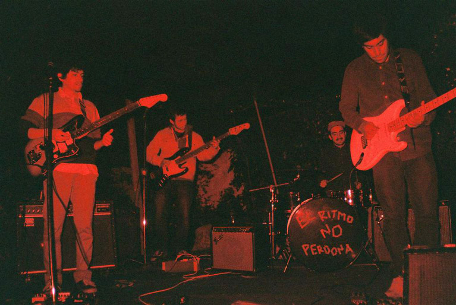
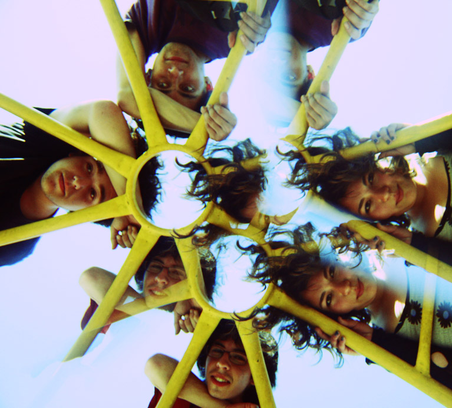

Piloto libera dos nuevos singles
Se trata de “La Pajarería” de Niños del Cerro y “Miedo a la Lluvia” de Pujem.
Se trata de la reedición de “La Pajarería”, una oscilante declaración pop, noise y math rock, facturada por Niños del Cerro. La banda, formada en 2012 y liderada por Simón Campusano, toma su nombre del Colegio Cerro Grande, que los vio nacer. El Proyecto también considera al otro miembro fundador Nacho Castillo (guitarra) y, desde éste 2014, a Pepe Mazurett (batería) y Felipe Villarrubia (Bajo). La Pajarería lo puedes descargar desde http://piloto.club/la-pajareria/.
Desde un lugar más íntimo e introspectivo, Pujem, juego de palabras entre el apellido y el apodo del vocalista Javier Poduje, revela sus primeras composiciones. “Miedo a la Lluvia”, contiene una psicodelia contemporánea, con suaves tintes progresivos y una voz inocente, melodiosa y ligera. La banda, también está conformada por Yaney Salgado (guitarra), Franco Perucca (bajo), Vladimir Mella (teclado) y José Cruz (batería). Descarga “Miedo a la Lluvia” desde http://piloto.club/miedo-a-la-lluvia/.
ADJUNTO: FOTO GRANDE BANDA (Niños del Cerro) FOTO GRANDE BANDA (PUJEM)
PILOTO: Sitio Web Facebook Twitter Instagram Soundcloud
✈ comunicaciones@piloto.club ✈ contacto@piloto.club ✈